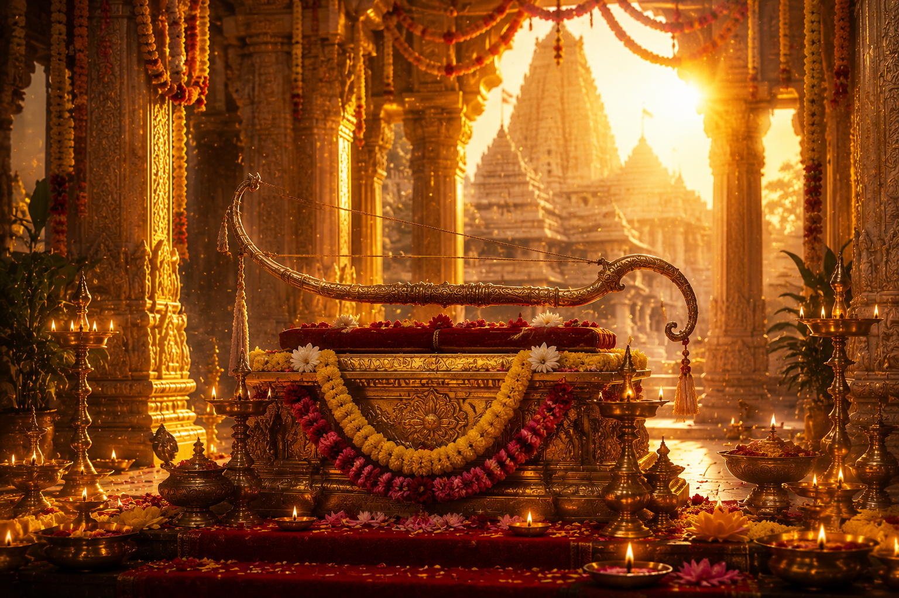

శ్రీరామ నవమి
భారతీయ మరియు తెలుగు సంప్రదాయ పర్వదినం

౧. పరిచయం
శ్రీరామ నవమి హిందూ ధర్మంలో అత్యంత పవిత్రమైన వైష్ణవ పర్వదినాలలో ఒకటి. చైత్ర శుద్ధ నవమి రోజున మర్యాద పురుషోత్తముడైన శ్రీరామచంద్రుని జన్మదినాన్ని పురస్కరించుకొని ఈ మహోత్సవాన్ని భక్తిశ్రద్ధలతో జరుపుకుంటారు. ఈ పర్వదినం ధర్మం, సత్యం, ఆదర్శ జీవనం మరియు కుటుంబ విలువలకు ప్రతీకగా నిలుస్తుంది. భారతదేశమంతటా ఉన్న శ్రీరామాలయాలలో ప్రత్యేక పూజలు, కల్యాణోత్సవాలు మరియు రామాయణ పారాయణాలు నిర్వహించబడతాయి.
౨. పండుగ ప్రాముఖ్యత
శ్రీరామ నవమి భగవాన్ శ్రీరాముని అవతార దినంగా అత్యంత పవిత్రమైన పర్వదినంగా భావించబడుతుంది. ధర్మాన్ని స్థాపించడానికి, దుష్టులను సంహరించడానికి, సజ్జనులను రక్షించడానికి శ్రీమహావిష్ణువు శ్రీరాముడిగా అవతరించిన రోజే శ్రీరామ నవమి.
శ్రీరాముడు ఆదర్శ కుమారుడు, ఆదర్శ సోదరుడు, ఆదర్శ భర్త, ఆదర్శ రాజు మరియు ఆదర్శ మానవునిగా భారతీయ సంస్కృతిలో చిరస్థాయిగా నిలిచాడు.
శ్రీరాముడు ఆదర్శ కుమారుడు, ఆదర్శ సోదరుడు, ఆదర్శ భర్త, ఆదర్శ రాజు మరియు ఆదర్శ మానవునిగా భారతీయ సంస్కృతిలో చిరస్థాయిగా నిలిచాడు.
౩. శ్రీరామ అవతారం – పురాణ నేపథ్యం
త్రేతాయుగంలో రావణుడు తన అహంకారంతో దేవతలను, ఋషులను మరియు ప్రజలను బాధించాడు. అతని దుర్మార్గాలను అంతం చేయడానికి శ్రీమహావిష్ణువు అయోధ్యలో దశరథ మహారాజు మరియు కౌసల్యాదేవికి శ్రీరామునిగా అవతరించాడు.
చైత్ర శుద్ధ నవమి, పునర్వసు నక్షత్రంలో శ్రీరాముని జననం జరిగింది. అనంతరం విశ్వామిత్ర మహర్షితో యజ్ఞరక్షణ, శివధనుస్సు విరిచిన సంఘటన, సీతాదేవి వివాహం, అరణ్యవాసం, రావణ సంహారం మరియు ధర్మపాలనతో కూడిన శ్రీరాముని జీవితం రామాయణంగా ప్రపంచానికి ఆదర్శమైంది.
చైత్ర శుద్ధ నవమి, పునర్వసు నక్షత్రంలో శ్రీరాముని జననం జరిగింది. అనంతరం విశ్వామిత్ర మహర్షితో యజ్ఞరక్షణ, శివధనుస్సు విరిచిన సంఘటన, సీతాదేవి వివాహం, అరణ్యవాసం, రావణ సంహారం మరియు ధర్మపాలనతో కూడిన శ్రీరాముని జీవితం రామాయణంగా ప్రపంచానికి ఆదర్శమైంది.
౪. చరిత్ర
శ్రీరామ నవమి పర్వదినాన్ని అనాదికాలం నుండి భారతదేశవ్యాప్తంగా జరుపుకుంటున్నారు. వాల్మీకి రామాయణం, ఆధ్యాత్మ రామాయణం, రామచరితమానస్ వంటి అనేక గ్రంథాలలో శ్రీరాముని మహిమ వర్ణించబడింది.
ఆంధ్రప్రదేశ్లోని భద్రాచలం, తెలంగాణ, అయోధ్య మరియు భారతదేశంలోని అనేక ప్రాంతాలలో ఈ పండుగను అత్యంత వైభవంగా నిర్వహిస్తారు.
ఆంధ్రప్రదేశ్లోని భద్రాచలం, తెలంగాణ, అయోధ్య మరియు భారతదేశంలోని అనేక ప్రాంతాలలో ఈ పండుగను అత్యంత వైభవంగా నిర్వహిస్తారు.
౫. శ్రీరామ నవమి ఎలా జరుపుకుంటారు
ఈ రోజున భక్తులు ఉదయాన్నే పవిత్ర స్నానం చేసి శ్రీరాముని పూజిస్తారు. శ్రీరామ, సీత, లక్ష్మణ, ఆంజనేయ స్వామివారిని అలంకరించి ప్రత్యేక పూజలు నిర్వహిస్తారు.
అనేక దేవాలయాలలో శ్రీ సీతారామ కళ్యాణం నిర్వహించడం ఈ పండుగలో అత్యంత ముఖ్యమైన విశేషం. రామాయణ పారాయణం, శ్రీరామ నామస్మరణ, భజనలు మరియు అన్నదాన కార్యక్రమాలు నిర్వహిస్తారు.
అనేక దేవాలయాలలో శ్రీ సీతారామ కళ్యాణం నిర్వహించడం ఈ పండుగలో అత్యంత ముఖ్యమైన విశేషం. రామాయణ పారాయణం, శ్రీరామ నామస్మరణ, భజనలు మరియు అన్నదాన కార్యక్రమాలు నిర్వహిస్తారు.
౬. శ్రీరామ నవమి రోజున నిర్వహించే ప్రధాన ఆచారాలు
పవిత్ర స్నానం
శ్రీరామ పూజ
శ్రీ సీతారామ కళ్యాణం
రామాయణ పారాయణం
శ్రీరామ నామ జపం
భజనలు
అన్నదానం
దానధర్మాలు
పెద్దల ఆశీర్వాదం తీసుకోవడం
శ్రీరామ పూజ
శ్రీ సీతారామ కళ్యాణం
రామాయణ పారాయణం
శ్రీరామ నామ జపం
భజనలు
అన్నదానం
దానధర్మాలు
పెద్దల ఆశీర్వాదం తీసుకోవడం
౭. ప్రధానంగా ఎక్కడ జరుపుకుంటారు
అయోధ్య శ్రీరామ జన్మభూమి
భద్రాచలం శ్రీ సీతారామచంద్ర స్వామి దేవస్థానం
ఒంటిమిట్ట శ్రీ కోదండరామ స్వామి దేవాలయం
రామేశ్వరం
భారతదేశంలోని అన్ని శ్రీరామాలయాలు
భద్రాచలం శ్రీ సీతారామచంద్ర స్వామి దేవస్థానం
ఒంటిమిట్ట శ్రీ కోదండరామ స్వామి దేవాలయం
రామేశ్వరం
భారతదేశంలోని అన్ని శ్రీరామాలయాలు
౮. శ్రీరామ నవమి ఆధ్యాత్మిక సందేశం
శ్రీరాముడు ధర్మానికి ప్రతిరూపం. ఆయన జీవితం సత్యం, వినయం, కర్తవ్యనిష్ఠ, తల్లిదండ్రుల పట్ల గౌరవం, స్నేహం, రాజధర్మం మరియు కుటుంబ విలువలను మనకు బోధిస్తుంది.
ధర్మం కోసం ఎంతటి కష్టాలైనా సహనంతో ఎదుర్కొని, సత్యమార్గంలో నడవాలని శ్రీరాముని జీవితం ప్రతి మనిషికి ఆదర్శంగా నిలుస్తుంది.
ధర్మం కోసం ఎంతటి కష్టాలైనా సహనంతో ఎదుర్కొని, సత్యమార్గంలో నడవాలని శ్రీరాముని జీవితం ప్రతి మనిషికి ఆదర్శంగా నిలుస్తుంది.
౯. ఆసక్తికర విషయాలు
శ్రీరాముడు శ్రీమహావిష్ణువు యొక్క ఏడవ అవతారం.
చైత్ర శుద్ధ నవమి రోజున శ్రీరాముని జన్మించినట్లు పురాణాలు పేర్కొంటాయి.
భద్రాచలంలో జరిగే శ్రీ సీతారామ కళ్యాణం ప్రపంచప్రసిద్ధి చెందింది.
వాల్మీకి మహర్షి రచించిన రామాయణం ప్రపంచంలోని ప్రాచీన ఇతిహాసాలలో ఒకటి.
"శ్రీరామ" నామస్మరణ అత్యంత పవిత్రమైన నామజపాలలో ఒకటిగా భావించబడుతుంది.
భారతదేశంతో పాటు అనేక దేశాలలో కూడా శ్రీరామ నవమి ఉత్సవాలు నిర్వహించబడుతున్నాయి.
చైత్ర శుద్ధ నవమి రోజున శ్రీరాముని జన్మించినట్లు పురాణాలు పేర్కొంటాయి.
భద్రాచలంలో జరిగే శ్రీ సీతారామ కళ్యాణం ప్రపంచప్రసిద్ధి చెందింది.
వాల్మీకి మహర్షి రచించిన రామాయణం ప్రపంచంలోని ప్రాచీన ఇతిహాసాలలో ఒకటి.
"శ్రీరామ" నామస్మరణ అత్యంత పవిత్రమైన నామజపాలలో ఒకటిగా భావించబడుతుంది.
భారతదేశంతో పాటు అనేక దేశాలలో కూడా శ్రీరామ నవమి ఉత్సవాలు నిర్వహించబడుతున్నాయి.
౧౦. శ్రీరామ నవమి రోజున చేయవలసిన ముఖ్యమైనవి
పవిత్ర స్నానం చేయాలి.
శ్రీరాముని పూజించాలి.
రామాయణం పారాయణం చేయాలి.
శ్రీరామ నామాన్ని జపించాలి.
సీతారామ కళ్యాణంలో పాల్గొనాలి.
దానధర్మాలు చేయాలి.
అన్నదాన కార్యక్రమాలలో పాల్గొనాలి.
పెద్దల ఆశీర్వాదం తీసుకోవాలి.
శ్రీరాముని పూజించాలి.
రామాయణం పారాయణం చేయాలి.
శ్రీరామ నామాన్ని జపించాలి.
సీతారామ కళ్యాణంలో పాల్గొనాలి.
దానధర్మాలు చేయాలి.
అన్నదాన కార్యక్రమాలలో పాల్గొనాలి.
పెద్దల ఆశీర్వాదం తీసుకోవాలి.
౧౧. ఆధారాలు
గ్రంథ ఆధారాలు
శ్రీమద్ వాల్మీకి రామాయణం
ఆధ్యాత్మ రామాయణం
ఆనంద రామాయణం
స్కాంద పురాణం
పద్మ పురాణం
ఇతర ఆధారాలు
ప్రముఖ శ్రీరామ దేవాలయాల ప్రచురణలు
భారతీయ ధార్మిక సంప్రదాయ గ్రంథాలు
శ్రీరామ భక్తి సాహిత్యం
శ్రీమద్ వాల్మీకి రామాయణం
ఆధ్యాత్మ రామాయణం
ఆనంద రామాయణం
స్కాంద పురాణం
పద్మ పురాణం
ఇతర ఆధారాలు
ప్రముఖ శ్రీరామ దేవాలయాల ప్రచురణలు
భారతీయ ధార్మిక సంప్రదాయ గ్రంథాలు
శ్రీరామ భక్తి సాహిత్యం
౧౨. ముగింపు
శ్రీరామ నవమి కేవలం శ్రీరాముని జన్మదినం మాత్రమే కాదు; ధర్మం, సత్యం, వినయం మరియు ఆదర్శ జీవనానికి ప్రతీకగా నిలిచే మహత్తర పర్వదినం.
శ్రీరాముని జీవితం ప్రతి మనిషికి స్ఫూర్తిదాయకం. కుటుంబం, సమాజం మరియు దేశం పట్ల కర్తవ్యాన్ని నిర్వర్తిస్తూ ధర్మమార్గంలో నడవాలని ఈ పర్వదినం మనకు బోధిస్తుంది.
"రామో విగ్రహవాన్ ధర్మః — ధర్మమే శ్రీరాముని స్వరూపం. శ్రీరాముని ఆదర్శాలను ఆచరిస్తూ ధర్మమార్గంలో జీవించడమే ఈ పర్వదినం యొక్క నిజమైన సందేశం."
శ్రీరాముని జీవితం ప్రతి మనిషికి స్ఫూర్తిదాయకం. కుటుంబం, సమాజం మరియు దేశం పట్ల కర్తవ్యాన్ని నిర్వర్తిస్తూ ధర్మమార్గంలో నడవాలని ఈ పర్వదినం మనకు బోధిస్తుంది.
"రామో విగ్రహవాన్ ధర్మః — ధర్మమే శ్రీరాముని స్వరూపం. శ్రీరాముని ఆదర్శాలను ఆచరిస్తూ ధర్మమార్గంలో జీవించడమే ఈ పర్వదినం యొక్క నిజమైన సందేశం."
✦ సర్వే జనాః సుఖినో భవంతు ✦